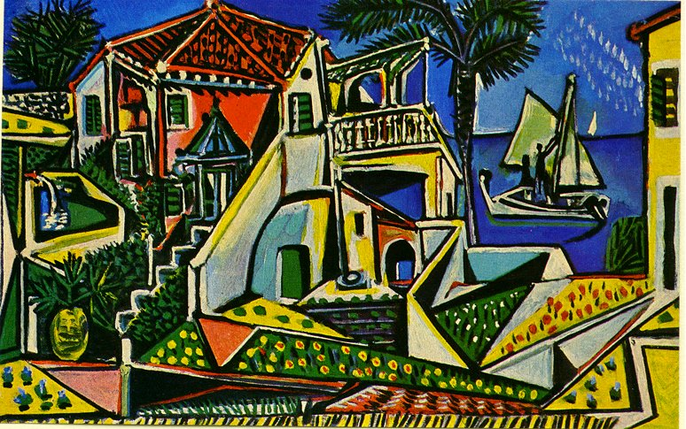

Pablo Picasso
Pablo Diego José Francisco de Paula Juan Nepomuceno María de los Remedios Cipriano de la Santísima Trinidad Clito Ruiz y Picasso[1], poznatiji samo kao Pablo Picasso (Malaga, 25. listopada 1881. - Mougins, 8. travnja 1973.), bio je španjolski slikar, suosnivač kubizma i jedan od najpoznatijih umjetnika 20. stoljeća.
Životopis

Kada se rodio nije mogao disati, pa je njegova majka pomislila da je mrtav i ostavila ga je na stolu. Spasio ga je njegov ujak Salvador koji je bio liječnik. “Doktori su u to vrijeme pušili cigare, a ni moj ujak nije bio iznimka. Kada me vidio kako ležim tamo, otpunhuo mi je dim u lice i ja sam odmah došao do sebe” - rekao je jednom prilikom Picasso.
Njegova je darovitost bila izuzetna od najranijeg djetinjstva. Njegova prva riječ bila je „piz”, skraćeno od lápiz (što je španjolska riječ za olovku). Njegov otac, također umjetnik, obrazovao ga je od 7. godine. Nakon što je, igrom slučaja, dovršio očevu sliku golubova, otac mu je predao sve svoje kistove, boje i palete i nikada više nije slikao iz razloga što je slika bila zadivljujuće lijepa.
Sa 16 godina upisao se na Likovnu Akademiju San Fernando (Real Academia de Bella Atres de San Fernando) u mjestu La Coruna u Španjolskoj, gdje je nekada predavao njegov otac. Umjetnički, bio je godinama ispred kolega u razredu koji su bili 5-6 godina stariji od njega. No, Picasso nije mogao podnijeti disciplinu i zbog toga je često bio kažnjavan. U Barceloni, gdje je pohađao školu, kao i u Madridu gdje je bio svakodnevni posjetitelj muzeja Prado, ispitivao je sve u vezi sa slikarstvom, a sanjao je i o Parizu, kamo napokon stiže u listopadu 1900. godine.
U Parizu je 1905. upoznao i francuskoga slikara Henrija Matissea, i to u kući spisateljice Gertrude Stein. Kao mladi umjetnik u Parizu, morao je zapaliti nekoliko svojih platna kako bi se ugrijao, a 1907. god. pada u depresiju i psihički oboljeva. No, nadahnut francuskim postimpresionističkim umjetnikom Paulom Cézanneom Picasso zajedno s francuskim slikarom Georgesom Braquom slika krajolike u stilu koji su kasnije kritičari nazvali „kockastim”, što je dovelo do naziva stila - „kubizam”. Neki od njihovih radova iz tog razdoblja toliko slični da ih je teško razlikovati. Ova suradnja između Picassa i Braquea potrajala je sve do 1911. god. Te iste godine ga je čak ispitivala policija o tome je li ukrao Mona Lisu. Naime, kada je slavna Leonardova slika nestala iz Louvrea, osumnjičio ga je pjesnik i “prijatelj” Guillaume Apollinaire.
Tijekom Prvog svjetskog rata nastanio se u Rimu radeći kao dizajner. Tu susreće i ženi se s Olgom Koklovom, otmjenom plesačicom i kćerkom carskog generala. Dvadesetih godina načino je nekoliko portreta, sina (rođ. 1921.) i brojnih prijatelja, u realističkom stilu. Nekoliko slika u kubističkom duhu ranih tridesetih izražavaju prikriveni erotizam i Picassovo zadovoljstvo svojom novom ljubavi, Marie Thérése Walter, koja mu je 1935. god. rodila kćerku Madu. Marie Thérése, koju je često portretirao dok je spavala, također je bila model za čuvenu sliku Djevojka ispred zrcala. Nakon Francovog napada na mjesto Guernica u Baskiji 26. travnja 1937. god., tijekom Španjolskog građanskog rata odlučuje naslikati sliku koja će opisati taj događaj. Slika Guernica je dovršena za manje od dva mjeseca i bila je izložena u Španjolskom paviljonu u Parizu za svjetsku izložbu (EXPO). Zakleo se da se neće vratiti u domovinu Španjolsku sve dok je na vlasti Francov režim. Svoje se zakletve i pridržavao, tako da je sve do smrti živio u Francuskoj.
 God. 1944. učlanio se u Francusku komunističku partiju i ostao je u njoj do smrti. Partija je kritizirala Picassov portret Staljina kao nedovoljno realističan, pa se Picasso ohladio prema komunizmu.
God. 1944. učlanio se u Francusku komunističku partiju i ostao je u njoj do smrti. Partija je kritizirala Picassov portret Staljina kao nedovoljno realističan, pa se Picasso ohladio prema komunizmu.
Ženio se dva puta i imao je mnogo ljubavnica. Imao je četvero djece, a posljednje dijete, Paloma, rođena je kada je on imao 68 godina. Među ljubavnicama, bila je i Dora Maar, Francuskinja hrvatskog podrijetla (na njegovoj slici Žena koja plače).
Picasso umire u dobi od 92 godine u svojoj vili Notre-Dame-de-Vie pored mjesta Mougins 8. travnja 1973. god. kada mu je otkazalo srce za vrijeme napada gripe. Budući da je Picasso već od 1920-tih mogao skupo prodavati svoja djela, mogao si je priuštiti da većinu djela zadrži u svom vlasništvu, tako da je u vrijeme smrti posjedovao oko 50.000 vlastitih djela. Ona su nakon njegove smrti prešla u vlasništvo Francuske i njegovih nasljednika. Prema Guinnessovoj knjizi rekorda Picasso je bio najplodniji umjetnik u povijesti. Računa se da je naslikao oko 13.500 slika, 100.000 otisaka i grafika, 34.000 ilustracija za knjige i 300 skulptura. Ukupna vrijednost svih njegovih djela računa se u milijardama eura.
Djela

Gotovo da nema likovnog područja u kojem Picasso nije izrazio svoj umjetnički kreativni genij. Bavio se slikarstvom na platnu i na zidu, skulpturom, grafikom i keramikom, izrađivao kolaže i plakate i u svemu tome bio velik.
Njegov golemi opus obuhvaća više stvaralačkih faza: modru, ružičastu, kubističku, zatim klasičnu, nadrealisitčku i ekspresionističku. Modro razdoblje je tako nazvano jer su različiti oblici plavoga nekoliko godina dominirali njegovim radovima. Na njegovim slikama iz tog razdoblja humanistički je oslikana ljudska mizerija u likovima slijepaca, prosjaka, alkoholičara i prostitutki. Neki kritičari vjeruju kako slike iz modrog razdoblja izražavaju njegov strah od smrti, siromaštva i bolesti[2]. Godine 1904. i 1905. mijenja svoje boje iz plavih u ružičaste i crvene, što se kasnije naziva njegovim Ružičastim razdobljem. Nadahnuće je tada nalazio u cirkusu koji je posjećivao nekoliko puta u tjednu. Kritičari vjeruju da je ovo razdoblje vrijeme ostvarenja vlastitih težnji i sreće u osobnom životu, te su stoga slike izvođene u svjetlijim bojama.
U povijesti slikarstva malo je “državnih udara” koji se smionošću i odjekom mogu mjeriti s onim što ga je Pablo Picasso ostvario 1907. godine, kada je svojim zapanjenim prijateljima pokazao Gospođice iz Avignona, sliku na kojoj je svijet predočio kao u razbijenu zrcalu. Nakon analitčikog kubizma Picasso prelazi na drugu fazu kubizma – sintetički kubizam. Ova druga faza kubizma dekorativnija je, a boje igraju veću ulogu, dok oblici ostaju isfragmentirani i ravni.
Picasso je bio pokretač i pravca pozantog kao sugestivni ekspresionizam, koji uz njegov kubizam predstavlja pravi revolucionarni obrat u modernoj likovnoj umjetnosti.
Picasso je znao izrađivati scenografiju za Ruski balet Sergeja Djagileva. Također, poznavao je i francuskog skladatelja Erika Satieja za čije je (neke) balete napravio scenografije. Također je bio i plodan pjesnik, a napisao je i dvije drame, Žudnja uhvaćena za rep (1944.) i Četiri djevojčice (1947.-48.).
Za vrijeme njegova života Picassovi su radovi izlagani na bezbrojnim izložbama. Najneobičnija je bila svakako ona iz 1971. god. u Louvreu koja je priređena u čast njegova 90-og rođendana. Prije njega nijedan živi umjetnik nije u Louvreu imao izložbu svojih djela. Velika retrospektiva njegovih djela održana je 1980. god. u Muzeju moderne umjetnosti u New Yorku.
Zanimljivosti o Pablu